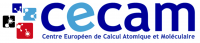
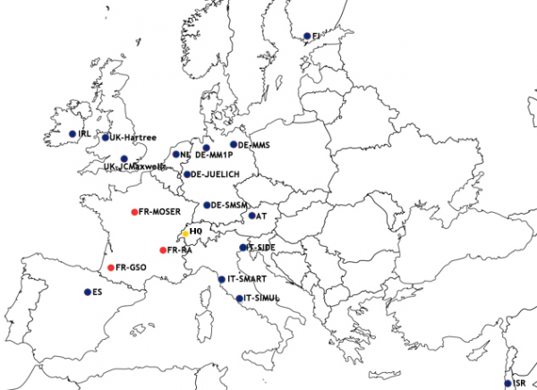

CECAM¶
Centre français de calcul atomique et moléculaire – Rhône-Alpes¶
Le CECAM-FR-RA est un Nœud dans le sens de la Convention CECAM représentant la Région Rhône-Alpes en France. Il contribue à la réalisation des objectifs du CECAM.
Les missions du CECAM-FR-RA sont :
encourager des projets de recherche collaboratifs à travers un programme de séjours scientifiques de courtes et longues durées ;
organiser ou sponsoriser des rencontres scientifiques internationales de tailles et de durées variées (séminaires, colloques, ateliers, conférences thématiques et générales) ;
organiser ou sponsoriser des tutoriels et écoles pour jeunes chercheurs en biologie, chimie, physique ou ingénierie numérique ;
contribuer aux programmes des masters et doctorats en science numérique des partenaires universitaires ;
poursuivre des opportunités de financement externe pour des programmes collaboratifs de recherche ou formation entre les partenaires du CECAM-FR-RA et avec les nœuds et le quartier général du CECAM(lien externe) ;
fédérer et structurer au niveau régional les activités en science numérique liées aux modèles à particules ;
participer à la coordination nationale de ces activités en France ;
augmenter la visibilité et l’intégration au niveau européen de la science numérique en Région Rhône-Alpes.
Centre européen de calcul atomique et moléculaire¶
CECAM is a European organization devoted to the promotion of fundamental research on advanced computational methods and to their application to important problems in frontier areas of science and technology. As the acronym CECAM indicates, traditionally the focus of its activities has been on atomistic and molecular simulations, mainly in relation to the physics and chemistry of condensed matter. Powerful methods have been developed over the last two decades for molecular simulations that have improved on their reliability. In addition, the synergic development of hardware and software, have further led molecular simulations to broaden their reach to more realistic modeling and thus their range of application, from materials science to biology to medicinal chemistry. CECAM has always been very attentive to such development and also fostered it. Nowadays, computer simulations are considered the third way of doing science, beyond theory and experiment. Indeed, their role as a research tool has been growing in many domains of science and engineering, to the point of becoming increasingly essential to their progress. In response to this phenomenon, which is believed to be at its early stages only, CECAM will evolve in its scope and structure, to cover important areas of computational science, beyond those traditional to the CECAM community, and to comprehend several competence centers distributed over Europe and their coordinated activities.
CECAM activities will range from the organization of scientific workshops to that of specific tutorials at the graduate level on the use of especially relevant software, from brain-storming meetings on timely topics to collaborative research projects, and sponsoring of an interesting visitors program as well as of specialized courses in computational sciences also at the master level.
